NEXOR × RAINOAH · 16 DE NOVEMBRO DE 2026
Plano de marca e conteúdo: onde estamos, o que as marcas fortes fazem e como a Rainoah se constrói, com roteiros, séries e creators.
PONTO DE PARTIDA
1 milhão
de views na collab do colete massageador, “o presente perfeito”
~400
views por reel próprio (mediana), de 132 a 750
3.267
seguidores, com selo de verificado e 597 posts
1,4 mil
comentários de “eu quero” e “onde compra”, respondidos pela creator
A demanda existe e já foi declarada em público. O que falta é a marca capturar e responder.
Fonte: Auditoria Instagram @rainoahbemestar, dados públicos de 31/10/2026.
DIAGNÓSTICO
1
As collabs ficam no perfil do creator, e quem clica encontra um grid de frases motivacionais.
2
O reel de 1 milhão tem 1,4 mil comentários de compra, e a resposta saiu com o link de afiliada da creator.
3
A bio não tem promessa nem link visível, e os destaques não falam de dor, preço ou antes e depois.
4
Não existe automação de DM, isca ou cupom de primeira compra.
5
Desconto permanente de 55% a 58% e parcelamento com juros reduzem a confiança na hora de pagar.
Fonte: Auditoria Instagram @rainoahbemestar, 31/10/2026.
O PROBLEMA
“Simplificamos o bem-estar” e “comunidade mais relax”. Ninguém pesquisa isso, e a frase não diz o que a marca faz.
Um post diz “mais de 30 anos” e a legenda de outro diz “há 39 anos”.
Suplementos no grid de uma marca de massageadores, e cerca de 70% do grid recente é institucional.
Sem diferencial claro, o cliente compara preço com a Shopee. Em 6/11, a comunicação foi vista como genérica e impessoal.
Sem uma frase própria, cada anúncio precisa convencer do zero.
Fontes: Auditoria Instagram (31/10/2026) e reunião de 6/11/2026.
O QUE AS MARCAS FORTES TÊM
| Marca | A frase na bio do Instagram | Seguidores | Mediana de views |
|---|---|---|---|
| Havaianas | “Original do Brasil, desde 1962” | 4,6 M | ~74 mil |
| Tramontina | “Há mais de 100 anos fazendo bonito juntos” | 1,3 M | ~28 mil |
| Dove | “Mudar a beleza e elevar a autoestima da próxima geração” | 1,4 M | ~95 mil |
| Patagonia | “Estamos no negócio para salvar o nosso planeta” | 5,5 M | ~152 mil |
| Therabody | “Ciência para você ter a melhor aparência, sensação e desempenho” | 1,1 M | ~18 mil |
| Rainoah (hoje) | “Simplificamos o bem-estar” | 3,3 mil | ~400 |
Uma frase curta, repetida em tudo, vira o motivo para seguir, lembrar e compartilhar. As outras marcas também têm base e verba maiores, então a comparação é de método, não de escala.
Fonte: Instagram, bios (traduzidas) e reels recentes, 16/11/2026; bio da Rainoah: auditoria de 31/10/2026.
A NOSSA RESPOSTA
A prova. Mostramos quem faz e como faz.
A origem. 39 anos de fábrica própria, no Brasil.
A promessa. Quem trabalha duro merece se recuperar.
A frase que fecha todo vídeo, a bio e a saudação do WhatsApp.
O filtro: todo conteúdo e toda decisão se medem por ela.
O convite: quem trabalha duro, venha se cuidar com a gente.
A PROMESSA NA PRÁTICA
Promessa ao cliente: quem trabalha duro merece se recuperar. Personalidade cuidadora, de gente comum, com humor e sem pose.
| Valor | Na prática | Nunca |
|---|---|---|
| Fábrica real | Mostrar como fazemos e quem faz | Usar foto de banco de imagem, ou dizer “30 anos” num lugar e “39 anos” em outro |
| Honestidade | Preço claro, Pix à vista | Manter um desconto fixo de 55% a 58% como se fosse promoção |
| Cuidado | Atendimento de gente, troca grátis em 30 dias | Vender o que não resolve a dor |
Filtro de decisão para campanha, influenciador, produto e post: mostra a fábrica ou gente real? É honesto no preço e na promessa? Cuida de uma dor real? Dois “não” e não fazemos.
Hipótese a validar com os 3 sócios em um workshop de 2 horas.
A TESE
Um princípio de comportamento de compra que usamos para dividir os papéis do ecossistema.
Emoção e alcance. Pegam os 15% que compram pelo desejo.
Validação. Fábrica, pessoas e garantia convencem os 85% que precisam de prova.
Conversão. Preço no Pix, oferta clara e atendimento pronto.
Princípio de referência de mercado. Os percentuais não foram medidos na Rainoah.
REFERÊNCIA · CONCORRENTES DIRETOS
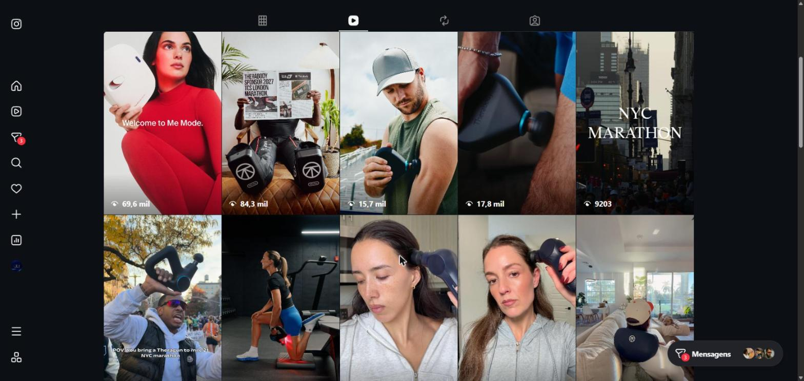
No print, o número no canto de cada vídeo é o total de views. Reels de 9 mil a 84 mil. Tem um conceito que une os produtos, o “Me Mode”: o ritual diário de colocar você em primeiro lugar.
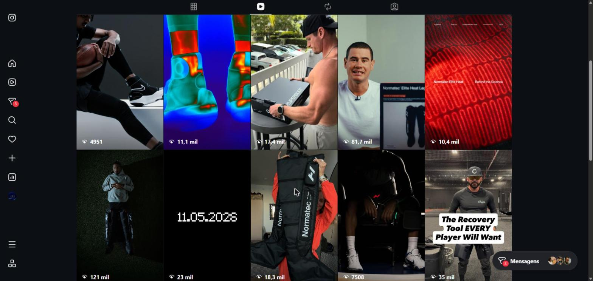
O produto explicado como tecnologia, com atletas e gente real usando. O melhor reel que vimos teve 121 mil views.
Ver os perfis: instagram.com/therabody · instagram.com/hyperice · dados de 16/11/2026
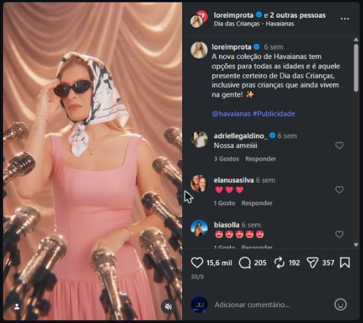
REFERÊNCIA · PRESENTE E EMOÇÃO
Na Rainoah: a reação de quem recebe o presente, com a palavra-chave PRESENTE na DM.
Ver o post: instagram.com/reel/Dd7km_CS0zN (collab, de 30/9)
Perfil: instagram.com/havaianas · dados de 16/11/2026
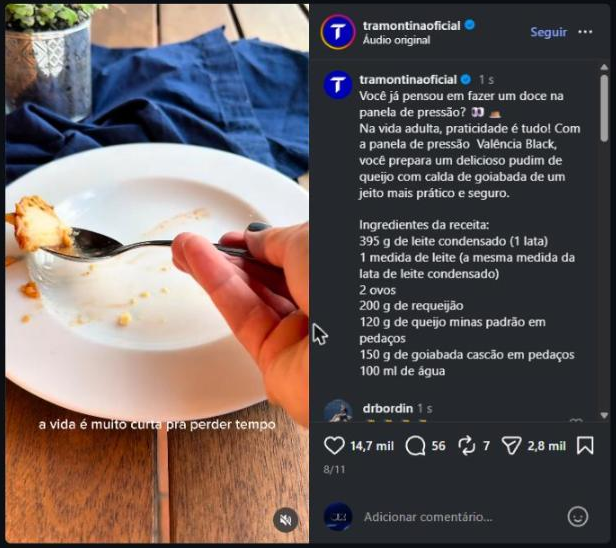
REFERÊNCIA · CURIOSIDADE EM USO
Na Rainoah: um gancho de curiosidade com o produto em uso, como “Trabalha oito horas sentado? Faz isso quinze minutos à noite.”
Ver o post (3,1 M): instagram.com/tramontinaoficial/reel/DffB69FFKtl
Guia de amigo oculto (690 mil): instagram.com/tramontinaoficial/reel/DfnCkbcDUTP
Perfil: instagram.com/tramontinaoficial · dados de 16/11/2026
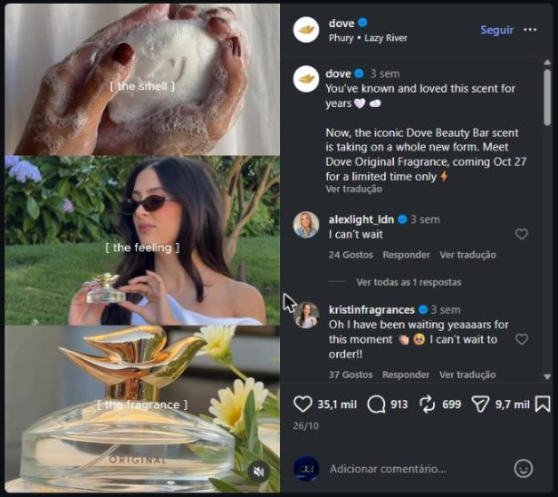
REFERÊNCIA · DEMANDA DECLARADA
Na Rainoah: um responsável da empresa responde em vídeo as perguntas reais dos comentários, e “Qual é a sua dor?” vira carrossel.
Ver o post (813 mil): instagram.com/dove/reel/De9_FY4PL28
Pergunta de escolha (549 mil): instagram.com/dove/reel/Dfk-xYNvFW3
Perfil: instagram.com/dove · dados de 16/11/2026
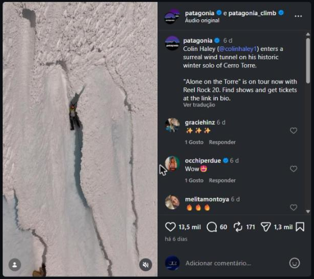
REFERÊNCIA · MARCA QUE CONTA HISTÓRIAS
Na Rainoah: um filme curto da fábrica, com as pessoas da linha de produção e sem oferta no vídeo.
Ver o post: instagram.com/patagonia/reel/Dfibtk0irAZ
Perfil: instagram.com/patagonia · dados de 16/11/2026
O QUE AS REFERÊNCIAS ENSINAM
1
Nos quatro casos, os envios superam os comentários. Presente, utilidade e desejo são o que as pessoas compartilham.
2
Havaianas e o colete da Rainoah seguem a mesma fórmula. A diferença é a marca responder e capturar.
3
Os 690 mil da Tramontina atraíram reclamações de entrega. A Black Friday é em 27/11.
Fonte: posts de Tramontina, Havaianas, Dove e Patagonia, contadores de 16/11/2026.
O ECOSSISTEMA RAINOAH
Alcance e emoção. UGC de 3 a 4 criadores e embaixadores escolhidos pelo scorecard.
A prova. Fábrica, pessoas e a série semanal, com uma biblioteca de conteúdo para afiliados e revendedores.
Recompra. Cupom de membro rastreável e ativações locais, como corridas.
Conversão. DM com palavra-chave, vídeo personalizado do atendente e recuperação de carrinho.
O filtro de decisão vale para tudo: fábrica real, honestidade e cuidado.
COMO APROVEITAR A ESTRUTURA
Uma gravação em lote com o videomaker, os sócios e os creators
Reels, stories e destaques, seguindo os quatro pilares.
Os vídeos viram criativos no Meta e no Google, com os creators autorizados.
Vídeo do atendente, recuperação de carrinho e recompra no Datacrazy.
Vídeo de uso e da fábrica ao lado de cada produto.
Clipes curtos de uso nos anúncios do Mercado Livre e da Shopee.
Uma biblioteca única para o time de afiliados e para o perfil de revendedores.
AS IDEIAS CENTRAIS
| Ideia central | Caso real | Para a Rainoah |
|---|---|---|
| Presente com reação real | Havaianas, 1,4 M (slide 10) e Cacau Show, 2,5 M (slide 22) | A reação de quem recebe o colete, em collab |
| Responder os clientes | Dove (slide 12) e Ryanair, 3,4 M (slide 23) | Vídeos respondendo perguntas reais |
| O rosto da empresa | Cimed, reels de até 1,2 M (slide 18) | Um sócio como rosto, com rotina e bordão |
| O especialista explica | Therabody com treinadores, ~319 mil (slide 19) | Barbeiros e fisioterapeutas explicando o uso |
| Evento e comunidade | Therabody na maratona, 2,9 M (slide 20) | Ponto de recuperação em corridas locais |
| Humor e personagem | Duolingo, 11,5 M (slide 21) | Humor leve com as pessoas da fábrica |
| Creator convida para live | Magalu, 4,6 M (slide 24) | Live com creator, depois dos testes de UGC |
Cada ideia tem um vídeo real nos próximos slides. O que fixamos é a ideia central, não um roteiro fechado: o roteiro nasce na hora de gravar.
Fonte: Instagram, 16/11/2026. As views vêm dos reels de cada perfil.
IDEIA CENTRAL · O ROSTO DA EMPRESA
Na Rainoah: um sócio como rosto da empresa, com rotina real, humor leve e um bordão da casa.
Ver o post: instagram.com/karlacimed/reel/DfnqmFNBSe9
Perfil: instagram.com/karlacimed · dados de 16/11/2026
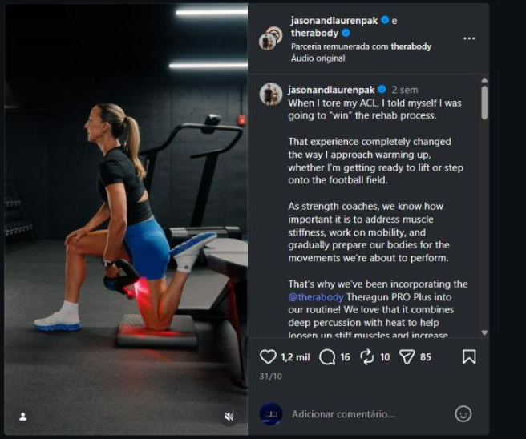
IDEIA CENTRAL · O ESPECIALISTA EXPLICA
Na Rainoah: barbeiros, fisioterapeutas e dentistas, que já usam o equipamento no trabalho, explicam por que escolheram.
Ver o post: instagram.com/therabody/reel/DfKdV8eRv1v
Perfil: instagram.com/therabody · dados de 16/11/2026
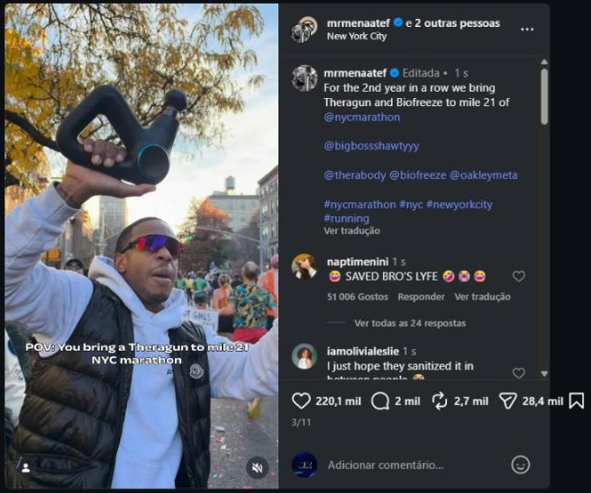
IDEIA CENTRAL · EVENTO E COMUNIDADE
Na Rainoah: um ponto de recuperação em corridas e eventos locais, filmado com um creator, que vira comunidade.
Ver o post: instagram.com/therabody/reel/DfR_ZUjpYKj
Perfil: instagram.com/therabody · dados de 16/11/2026
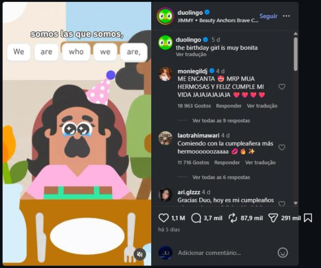
IDEIA CENTRAL · HUMOR E PERSONAGEM
Na Rainoah: humor leve com as pessoas da fábrica, com personagens que se repetem e o cuidado no final.
Ver o post: instagram.com/duolingo/reel/DfnZ7CchmsQ
Perfil: instagram.com/duolingo · dados de 16/11/2026
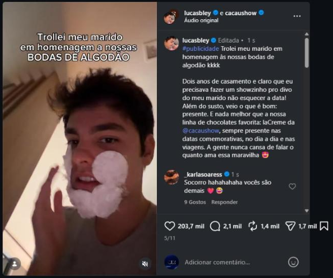
IDEIA CENTRAL · PRESENTE E HISTÓRIA (BRASIL)
Na Rainoah: uma situação engraçada do dia a dia em que o colete ou a pistola chega como presente, contada por um creator.
Ver o post: instagram.com/cacaushow/reel/DfXNmGfsUwk (de 5/11)
Perfil: instagram.com/cacaushow (5,2 M) · dados de 16/11/2026
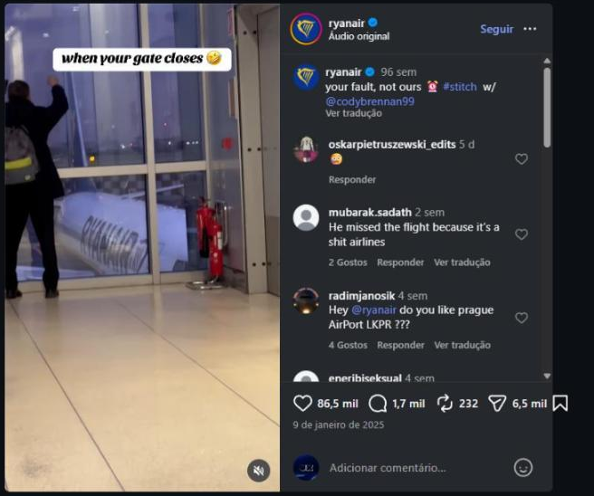
IDEIA CENTRAL · RESPONDER EM VÍDEO, COM HUMOR
Na Rainoah: responder em vídeo as dúvidas e os comentários reais dos clientes, com bom humor e o cuidado como tom.
Ver o post: instagram.com/ryanair/reel/DEnQQukvaWT (de 9/1/2025)
Perfil: instagram.com/ryanair · dados de 16/11/2026
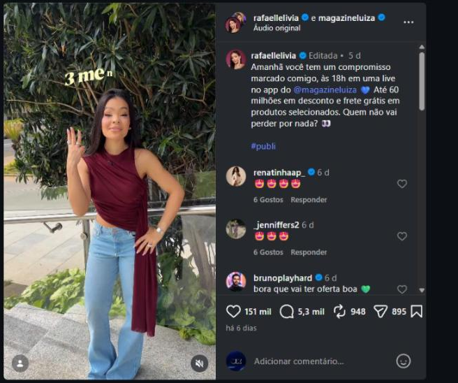
IDEIA CENTRAL · CREATOR CONVIDA PARA UMA LIVE
Na Rainoah: a live vem depois dos testes de UGC e de um e-commerce previsível, como foi recomendado na reunião de 5/11.
Ver o post: instagram.com/magazineluiza/reel/DfiW7fVJNgx (de 9/11)
Perfil: instagram.com/magazineluiza · dados de 16/11/2026
LINHA EDITORIAL
| Pilar | Quem produz | Papel | Peso |
|---|---|---|---|
| Uso real e reação | Creators e clientes | Alcance e emoção | 40% |
| Dor → solução | Videomaker e creators | Vira venda | 25% |
| Gente da Rainoah (série) | Videomaker e sócios | Confiança e comunidade | 20% |
| Prova e oferta | Videomaker e e-commerce | Preço no Pix e garantia | 15% |
Regras de todo vídeo: primeiro frame com a pessoa ou a dor, sem logo no início, primeira pessoa, linha de confiança no fim e uma palavra-chave por vídeo.
Base: matriz 60/25/15 da auditoria, com o pilar de gente acrescentado para o videomaker.
CREATORS · COMO ESCOLHER
1. Levantar quem já compra, comenta ou vende com cupom.
2. Pontuar no scorecard ao lado.
3. Testar: 1 produto e 1 vídeo, com link e cupom próprios.
4. Escalar quem converte e amarrar no contrato.
Entra quem fizer 17 ou mais de 24 pontos: nota de 0 a 3 em cada critério, vezes o peso.
| Critério | Peso | Como medir |
|---|---|---|
| Usa de verdade | ×3 | Nos últimos 10 vídeos, o produto aparece natural ou parece publi forçada? |
| Tem a dor ou o público | ×2 | Trabalha sentado, corre, é barbeiro ou dentista, ou compra presente |
| Converte | ×2 | Mediana de views acima de 10% dos seguidores e comentários de compra (a calibrar) |
| Tom | ×1 | Fala simples, com humor, sem pose |
| Veto | — | Promete cura, tem polêmica recente ou anuncia concorrente direto |
Já vendem com cupom pelo perfil principal: @luiza.malavazzi e @cauanrunner (auditoria de 31/10/2026).
CREATORS · COMO USAR E O QUE AMARRAR
Modelo de referência: valide com o jurídico antes de assinar.
MAPA DE DORES E OPORTUNIDADES
| Dor | Oportunidade | Ação |
|---|---|---|
| 1 milhão de views viraram 3 mil seguidores | Captura | Palavra-chave na DM e resposta aos comentários |
| Marca sem posição clara | Identidade | Plataforma de 1 página e bio nova |
| Visitas sem carrinho; carrinhos abandonados | Conversão | Vídeo do atendente e teste da loja |
| Compras de oportunidade sem diferencial | Foco | Filtro de decisão e produto-âncora |
| Concorrência de preço (Shopee, Relaxmedic) | Fábrica | Mostrar fábrica, garantia e troca grátis |
| Perfil de revenda parado, sem números | Prova real | Conta do revendedor e kit inicial |
| Afiliados sem material | Biblioteca | Pasta de conteúdo do videomaker |
| Recompra e comunidade | Cupom de membro | Fluxo de recompra e eventos locais |
Fontes: auditorias de Instagram (31/10/2026) e resumos das reuniões de 5 e 6/11/2026.
COMUNIDADE E EMBAIXADORES
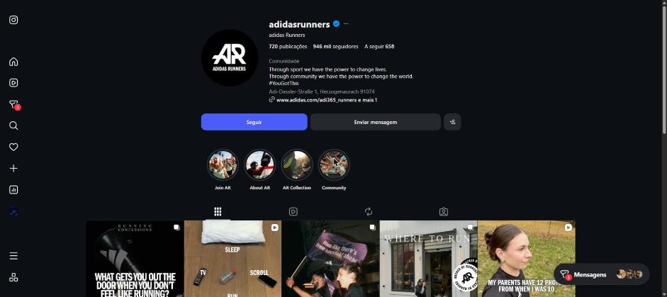
A Adidas perguntou aos membros o que precisavam, e a marca virou o veículo. Um cupom de 10% permitia rastrear quem era do grupo e medir o retorno.
Perfil @adidasrunners: 946 mil seguidores, com destaques “Join AR” e “Community”.
Scorecard de embaixador: usa de verdade ×3, tem a dor ×2, tem audiência e converte ×1.
Ver o perfil: instagram.com/adidasrunners · dados de 16/11/2026
PLANO
Black Friday: 27/11/2026. O investimento por cenário depende do orçamento a definir.
METAS
Faltam dados internos para confirmar: Insights do Instagram (90 dias), vendas por cupom e código de parceiro, retenção aos 3 segundos.
Fonte: metas das auditorias de Instagram, 31/10/2026.
PRÓXIMOS PASSOS